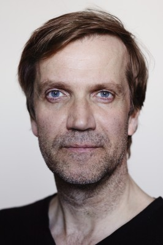

#10415 Und atmen Sie normal weiter *OmU*


 IMDB-Wertung: 7.0 / 10
IMDB-Wertung: 7.0 / 10  Metascore: 0
Metascore: 0 
Two women's lives will intersect while trapped in circumstances unforeseen. Between a struggling Icelandic mother and an asylum seeker from Guinea-Bissau, a delicate bond will form as both strategize to get their lives back on track.
Isländisch mit deutschen Untertiteln
Jahr: 2018
Dauer: 97 Minuten
FSK:
Land: Island Studio: AmaFilmsTonspuren:
Untertitel: Deutsch,
Auflösung: 720p (1280x536) Größe: 1771 MB
Genre: Drama
Regisseur: Isold Uggadottir
Drehbuch: Isold Uggadottir
Soundtrack: Gisli Galdur
Darsteller:
- Kristín Þóra Haraldsdóttir als Lára
- Babetida Sadjo als Adja
-  Þorsteinn Bachmann als Hörður
- Sveinn Geirsson als Bergur
 Gunnar Jónsson als Driver
Gunnar Jónsson als Driver- Petur Oskar Sigurdsson als Smuggler
- Patrik Nökkvi Pétursson als Eldar
- Bragi Arnason als Helgi
- Agust Bjarnason als Student
- Sólveig Guðmundsdóttir als Kolbrún
- Helga Vala Helgadóttir als Lawyer
- Jakob S. Jonsson als Sigvaldi
- Erling Jóhannesson als Customs officers
- Aladin Laaguid als Al Hassan
- Guðbjörg Thoroddsen als Teacher
Datei: X:\2018(N-Z)\Und atmen Sie normal weiter OmU (2018, FSK, 1280x536).mkv seit 05.01.2019
Festplatte: HD 2018(G-Z)-2019(A-Z)
 Es gibt insgesamt 172 Filme in der Gruppe '2018(N-Z)'
Es gibt insgesamt 172 Filme in der Gruppe '2018(N-Z)'